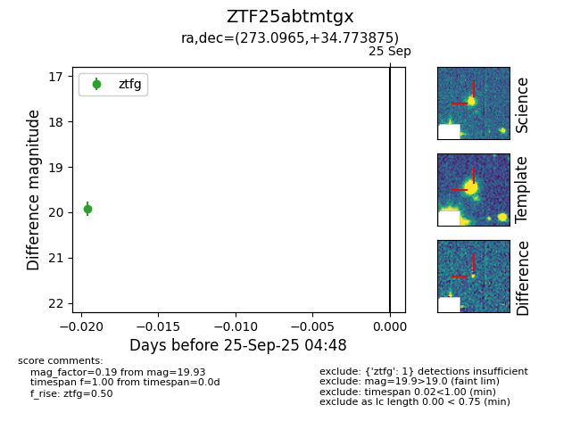

FINK: ZTF25abtmtgx
Lasair: ZTF25abtmtgx
ALeRCE: ZTF25abtmtgx
ZTF25abtmtgx (ztf,fink)
equatorial (ra, dec) = (273.0965,+34.77387)
galactic (l, b) = (61.6801,+22.58359)

last ztfg=19.93
1 ztfg detections